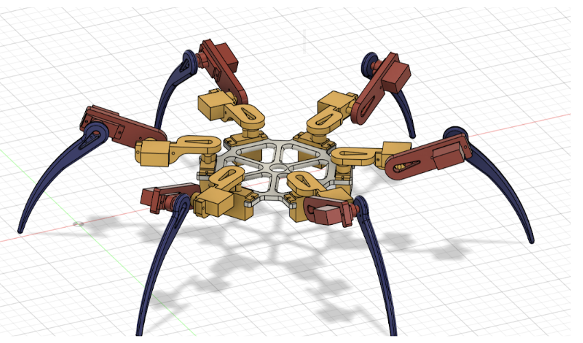

18-DOF Biomimetic Locomotion Testbed
Exploring high-degree-of-freedom coordination through geometric inverse kinematics, cubic trajectory planning, and hybrid fabrication techniques.
Kinematics & Trajectory
First, I created a Python-based gait simulator to validate trajectories in joint and workspace domains. Foot targets are converted to coxa, femur, and tibia angles via inverse kinematics.
Mechanical Design
Designing for 18 micro-servos (MG90S) required a rigorous focus on weight-to-torque ratios and joint reliability.
Pre-Bent Neutral Stance
I engineered the leg geometry with a pre-set neutral bend. This minimizes the holding torque required for the "standing" state, preventing servo stall and excessive current spikes.
The Horn Housing Crisis
Initial models faced a critical failure: the servo horns would slip or detach under high load. I redesigned the joints with an internal indent and a "locking lip" that was secured in place using PLA friction welding with a dremel.


Gait Optimization
Initial testing was conducted with the wiring and batteries kept off-body, IK gaits were too computationally heavy for the current SBC setup. FK gaits were tested as well for simplicity.